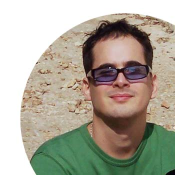

 Hi, I am Anderson, aka Govinda. My name is Anderson Malta, but friends and family call me Govinda, feel free to call me Govinda too. I am originally from Rio, currently living in London, cycling in the rain, having lots of ideas, currently working on a short-film ( comedy ), very curious about new technologies, always eating chia and quinoa, learning to saying "NO" to wacky people who have the tendency of writing very long or very short emails, cracking my knuckles and hitting my head against my desk when my ideas are not flowing. I develop my artistic work under the mantra that I really love what I do and I do it with hard work, focus and usually bent over backwards.
Totally in love with this now-centric and sharing moment we currently live in, I believe in open source, open ideas and good work.
Oh, and before I forget, the text editor I use the most is Dreamweaver, I am trying to get used to Sublime and sometimes I use TextWrangler too.
Thanks a lot for stopping by!